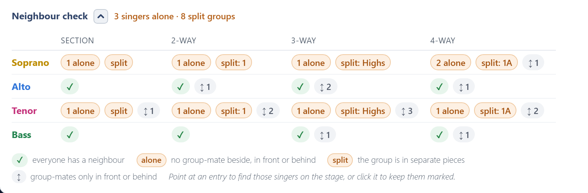
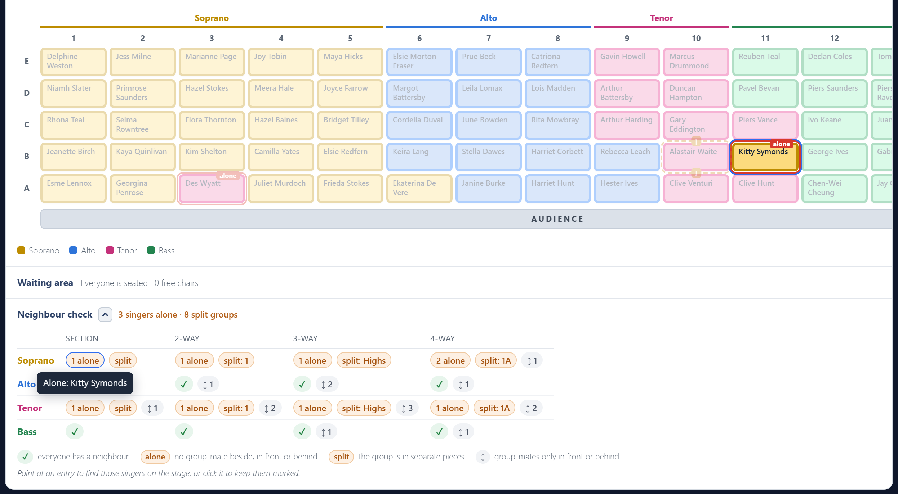

Neighbour check
The neighbour check, under the stage, checks every section and every split on the real grid: left, right, in front and behind. Its header gives the answer even while it is folded away. It reads everyone has a neighbour, or says how many singers are alone and how many groups are split up.

There is one row per section and one column per split. Each cell shows what it found:
| Mark | Meaning |
|---|---|
| ✓ | Everyone in this section has a group-mate next to them in this split. |
| 2 alone | Singers with nobody from their group beside, in front or behind. A problem. |
| split: 1st | That group is on stage in more than one separate piece. A problem. |
| ↕ 3 | Singers whose group-mates are only in front or behind, nobody beside. Allowed, just less comfortable to sing in. |
A group of one is never counted as alone, because there is nobody to sit them next to.
Finding them on the stage
Point at any entry, or tab to it with the keyboard, and the stage rings those singers and fades everyone else. For a split group, it rings the whole group, so you can see its separate pieces; a ↕ also rings the group-mates in front or behind; a ✓ rings the whole section. While you point, the stage is coloured and marked by that entry's split, whatever Colour by split is set to.
Click an entry to keep those singers marked while you scroll to the stage or move people around. A Marked pill above the stage names it; click its ×, or the entry again, to let go.

The stage also marks problems all the time, for the section and for the split you are colouring by:
- A red outline and an alone tag: a singer with nobody from their group next to them.
- A dashed amber outline: a singer with group-mates only in front or behind. An arrow in the gap points from them to each of those group-mates, or ↕ when two such singers are each other's group-mate.
Hover over a marked chair for what it means.
Printing it
To add the check to the printed plan, tick Include the neighbour check in the print options. It prints on its own page, with the names written out.